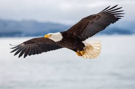

..peacock the national bird..
The peacock is a stunning bird known for its colorful and elaborate tail feathers, which it can fan out in a spectacular display during courtship. Native to South Asia, peacocks are famous for their iridescent blue and green plumage, which features eye-catching "eyes" on each feather. These feathers are not only a symbol of beauty but also of pride and strength in various cultures. Peacocks are often associated with elegance and grace, and in many myths and traditions, they represent renewal and immortality. Beyond their beauty, peacocks are also admired for their graceful movements and distinct call.

the powerful eagle!!
The eagle is a powerful and majestic bird of prey, known for its sharp eyesight, strong wings, and impressive hunting skills. Often a symbol of freedom, strength, and courage, the eagle is revered in many cultures worldwide. With a wingspan that can stretch over 7 feet, eagles are skilled hunters, often seen soaring high in the sky before swooping down to catch their prey. The bald eagle, in particular, is the national bird and symbol of the United States. Eagles are also known for their impressive nests, called aeries, which are built high in trees or on cliffs.

pigeons
Pigeons are medium-sized birds known for their gentle nature and adaptability to urban environments. With a variety of species, pigeons are often recognized by their round bodies, short legs, and distinctive cooing sounds. They are highly social creatures, often found in large flocks, and are known for their ability to navigate long distances, which historically made them valuable as messenger birds. Pigeons have a strong bond with their mates, often forming lifelong partnerships. While often associated with cities, they can also be found in rural areas and are admired for their resilience and ability to thrive in diverse environments.